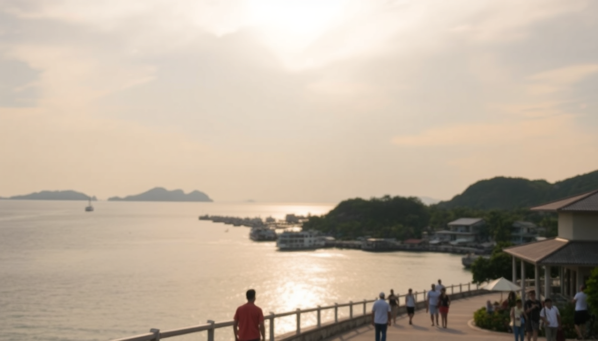

Best Time to Visit the Maldives: Dry Season vs. Wet Season

I spent three weeks island-hopping across the Maldives last year, and the biggest thing I learned is that “perfect weather” depends entirely on which atoll you’re in and how much you hate afternoon rain. The difference between the northeast monsoon (dry season) and the southwest monsoon (wet season) isn’t just about rain — it affects visibility for diving, how many guests are at your resort, and even what time the sun sets over the deck of your water villa. Here’s what I wish someone had told me before I booked.
When is the dry season in the Maldives?
The dry season runs roughly from November through April. This is the northeast monsoon, and it brings clear skies, low humidity, and calm seas. I landed in Malé on a December morning and the air was still — no wind, just a hot sun and a runway that felt like it was floating on glass.
During these months, the water visibility in North Malé Atoll and South Malé Atoll can hit 30 meters or more. If you’re planning to dive at places like the Manta Point cleaning station or the Banana Reef drift dive, you want this window. Resorts like Kurumba Maldives in North Malé Atoll and Anantara Dhigu in South Malé Atoll are packed, but the crowds are manageable if you book early.
- December to February: Peak season. Expect full occupancy at resorts like Coco Bodu Hithi and Constance Moofushi. Prices are highest, but the weather is most reliable.
- March to April: Shoulder months. Still dry, but temperatures creep up to 32°C. We stayed at Lily Beach Resort in South Ari Atoll in late March and had zero rain for six straight days.
- Best for divers: January and February offer the calmest currents. The Fish Head dive site in South Ari Atoll was crystal clear when I went mid-February.
When is the wet season in the Maldives?
The wet season — the southwest monsoon — runs from May through October. I’ll be honest: I was nervous about booking a trip in July, but it turned out to be more manageable than I expected. The rain usually comes in short, heavy bursts — often in the late afternoon — rather than all-day drizzle.
The trade-off is that resorts drop their prices by 30-50% compared to dry season rates. We booked a water villa at Sun Siyam Iru Fushi in Noonu Atoll (technically a speedboat ride from Malé) for half the peak-season price. The biggest downside is visibility: plankton blooms in the water column reduce clarity for diving, especially in North Malé Atoll and Ari Atoll.
- May and June: Transition months. Winds pick up, and some resorts close for renovations. We avoided these months because the sea can get choppy around Malé itself.
- July to September: Peak wet season. Expect rain 10-15 days per month. But the surf is better — Chickens break in North Malé Atoll gets consistent waves.
- October: A sweet spot. Rain tapers off, and the water clears up. I’d personally pick October over May for a budget trip.
Which atoll is best in the dry season?
If you’re visiting between November and April, you can basically pick any atoll and get good weather. But I found that North Malé Atoll and South Malé Atoll are the most practical choices because they’re close to Malé’s Velana International Airport — no seaplane transfer, just a 20-40 minute speedboat ride.
We stayed at Sheraton Maldives Full Moon Resort in North Malé Atoll for three nights. The house reef there is decent for snorkeling right off the beach, and the proximity to Malé means you can do a half-day city tour without burning a full day. For a quieter vibe, Olhuveli Beach & Spa in South Malé Atoll has a massive lagoon that stays calm even when the wind picks up.
- North Malé Atoll: Best for first-timers. Resorts like Huvafen Fushi and Gili Lankanfushi are within 30 minutes of the airport.
- South Malé Atoll: Slightly farther (45 minutes by speedboat), but reefs like Emboodhoo Finolhu are less crowded.
- Ari Atoll: Requires a seaplane (30-45 minutes), but the diving at Maaya Thila is worth it. We did a night dive there and saw nurse sharks and octopus.
Can you enjoy the Maldives in the wet season?
Yes, but you need to adjust your expectations. The rain usually hits in the afternoon, so I planned all my excursions for the morning. We booked a sunrise fishing trip from Lily Beach Resort in South Ari Atoll and caught skipjack tuna before the clouds rolled in. By 2 p.m., we were back in our room reading while a tropical downpour hammered the roof — honestly, it was kind of cozy.
The bigger issue is the wind. In July, the channel between North Malé Atoll and South Malé Atoll can get rough. Speedboat transfers from Malé to resorts like Adaaran Select Hudhuranfushi sometimes get canceled or delayed. If you’re prone to seasickness, bring Dramamine even for the short rides.
- Best wet-season activities: Surfing (consistent waves in North Malé Atoll), spa treatments (most resorts offer deep discounts), and indoor dining at overwater restaurants like Ithaa Undersea Restaurant at Conrad Maldives Rangali Island.
- Worst wet-season activities: Manta ray snorkeling (visibility drops) and sunset cruises (cloud cover kills the view).
Is it worth visiting Malé during the off-season?
Malé itself is a functional city — it’s not a resort island. I spent a day there during a layover in the wet season, and honestly, the rain made it feel even more cramped. The streets are narrow, and the Maldives Fish Market gets slippery when wet. If you’re stuck in Malé for a night, I’d recommend Hotel Jen Malé — it’s clean, has a rooftop pool, and is a 5-minute walk to the ferry terminal.
But the real reason to visit Malé in the wet season is the price. Flights drop significantly from June to September. I found round-trip tickets from Dubai to Malé for $320 in August. Just know that you’ll spend more time indoors at places like the National Museum or Sultan Park than you would lounging on a beach.
FAQ
What is the absolute worst month to visit the Maldives? July. It’s the rainiest and windiest month, with the highest chance of canceled excursions. Visibility for diving in North Malé Atoll drops to 10-15 meters, and the plankton bloom can make the water look like pea soup. If you’re on a tight budget, October is a better bet.
Do resorts close during the wet season? Some do. Smaller boutique resorts in Ari Atoll, like Vakarufalhi Island Resort, often close for maintenance from May to June. Major chains like Constance Moofushi and Anantara Kihavah stay open year-round but may offer lower rates. Always check the resort’s closure schedule before booking.
Can you see whale sharks in the wet season? Yes, but it’s less reliable. The South Ari Atoll Marine Protected Area is the best spot year-round, but the plankton blooms that reduce visibility also attract whale sharks. We saw one in July near Maamigili — it was a 20-minute encounter, but the water was murky. Dry season offers clearer sightings.
Conclusion
- For guaranteed sun and top diving visibility, book November through April. Stay in North Malé Atoll or South Malé Atoll to skip seaplane costs.
- For budget travelers, October and early November offer the best balance of decent weather and low prices. Avoid July unless you’re a surfer.
- Choose Ari Atoll only if you’re committed to diving — the seaplane cost and time are worth it for sites like Maaya Thila and Fish Head.
- Malé is a transit hub, not a destination. If you’re stuck there, Hotel Jen Malé is the most reliable option for a short layover.
- Wet season isn’t a dealbreaker if you plan mornings around activities and afternoons around relaxation. Just pack a rain jacket and a good book.